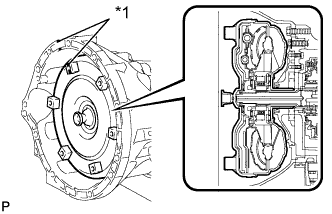
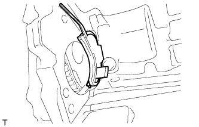

AUTOMATIC TRANSMISSION ASSEMBLY > INSTALLATION |
| 1. INSTALL TORQUE CONVERTER CLUTCH ASSEMBLY |
Using a vernier caliper and straightedge, measure dimension" A" between the transmission fitting surface of the engine *1 and the torque converter fitting surface of the drive plate *2 (step 1).
Align the matchmarks on the transmission case and torque converter clutch, and then mesh the splines of the input shaft and turbine runner.
| *1 | Matchmark |
Mesh the splines of the stator shaft and stator while turning the torque converter clutch.
| *1 | Matchmark |
|  |
Turn the torque converter clutch and align the matchmarks on the torque converter clutch and transmission case to fit the key of the oil pump drive gear into the slot on the torque converter clutch.
| *1 | Matchmark |
Using a vernier caliper and straightedge, measure dimension B shown in the illustration and check that B is more than A (measured in step 1).
| 2. INSTALL TRANSFER ASSEMBLY |
Install the transfer (Click here).
| 3. INSTALL TRANSMISSION CONTROL CABLE BRACKET |
Install the bracket with the 2 bolts.
| 4. INSTALL WIRE HARNESS CLAMP BRACKET |
 |
Install the 7 wire harness clamp brackets with the 7 bolts.
| 5. INSTALL AUTOMATIC TRANSMISSION ASSEMBLY |
 |
Confirm that the 2 knock pins are on the surface of the engine block that contact the transmission before transmission installation.
| *1 | Knock Pin |
| *2 | Crankshaft |
| *a | Surface of crankshaft that contacts torque converter clutch centerpiece |
Apply clutch spline grease to the surface of the crankshaft that contacts the torque converter clutch centerpiece.
Install the transmission with the 10 bolts.
| 6. INSTALL TRANSMISSION OIL COOLER ASSEMBLY |
 |
Connect the 2 hoses to the oil cooler tube unions.
Temporarily install the transmission oil cooler together with the transmission oil thermostat with bolt A. Install bolts B and C and tighten them to the specified torque. Then tighten bolt A to the specified torque.
Connect the No. 2 oil cooler inlet hose and No. 2 oil cooler outlet hose to the transmission oil thermostat.
| 7. CONNECT NO. 1 WATER BY-PASS PIPE |
Connect the water by-pass pipe to the transmission with the 2 bolts.
Connect the 2 water by-pass hoses to the transmission oil cooler.
| *1 | White Paint Mark |
| *2 | Blue Paint Mark |
| 8. CONNECT WIRE HARNESS AND CONNECTOR |
Connect the park/neutral position switch connector, transmission wire connector, 2 speed sensor connectors and transfer control connector.
Attach the 2 connector clamps and 8 harness clamps.
Connect the crankshaft position sensor connector and connect the wire harness with the nut.
Install the No. 2 wire harness heat insulator with the 2 nuts.
Tilt up the automatic transmission.
Connect the ground cable with the nut.
| 9. INSTALL REAR NO. 1 ENGINE MOUNTING INSULATOR |
Install the rear engine mounting insulator to the transmission with the 4 bolts.
Install the rear engine mounting heat insulator to the engine mounting insulator with the bolt.
| 10. INSTALL NO. 3 FRAME CROSSMEMBER SUB-ASSEMBLY |
Install the frame crossmember to the rear engine mounting insulator with the 4 bolts.
Install the frame crossmember with the 4 bolts and 4 nuts.
| 11. INSTALL FRONT SUSPENSION MEMBER BRACKET LH AND RH |
Install the front suspension member bracket LH and RH with the 8 bolts.
| 12. INSTALL DRIVE PLATE AND TORQUE CONVERTER CLUTCH SETTING BOLT |
 |
Turn the crankshaft to gain access to the installation locations of the 6 torque converter clutch setting bolts and install each bolt while holding the crankshaft pulley bolt with a wrench.
|  |
Install the flywheel housing side cover.
| 13. INSTALL STARTER ASSEMBLY |
Install the starter (Click here).
| 14. CONNECT TRANSMISSION CONTROL CABLE ASSEMBLY |
Connect the transmission control cable to the transmission control cable bracket with a new clip and connect the cable end to the control shaft lever with the nut.
| 15. INSTALL FRONT EXHAUST PIPE ASSEMBLY |
Install the front exhaust pipe (Click here).
| 16. INSTALL PROPELLER SHAFT ASSEMBLY |
Install the propeller shaft (Click here).
| 17. INSTALL FRONT PROPELLER SHAFT ASSEMBLY |
Install the front propeller shaft (Click here).
| 18. CONNECT CABLE TO NEGATIVE BATTERY TERMINAL |
| 19. ADD AUTOMATIC TRANSMISSION FLUID |
Add automatic transmission fluid (Click here).
| 20. ADD ENGINE COOLANT |
Add engine coolant.
Slowly pour coolant into the radiator reservoir until it reaches the F line.
Install the reservoir cap.
Install the radiator cap.*1
Start the engine and stop it immediately.*2
Allow approximately 10 seconds to pass. Then remove the radiator cap and check the coolant level. If the coolant level has decreased, add coolant.*3
Repeat steps *1, *2 and *3 until the coolant level does not decrease.
Install the radiator cap.*4
Set the air conditioning as follows.*5
| Item | Condition |
| Fan speed | Any setting except off |
| Temperature | Toward WARM |
| Air conditioning switch | Off |
Start the engine, warm it up until the thermostat opens, and then continue to run the engine for several minutes to circulate the coolant.*6
Stop the engine and wait until the engine coolant cools down to ambient temperature. Then remove the radiator cap and check the coolant level.*7
If the coolant level has decreased, add coolant and warm up the engine until the thermostat opens.*8
If the coolant level has not decreased, check that the coolant level in the radiator reservoir is at the F line.
If the coolant level is below the F line, repeat steps *4 through *8.
If the coolant level is above the F line, drain coolant until the coolant level reaches the F line.
| 21. INSPECT FOR ENGINE COOLANT LEAK |
Fill the radiator with coolant and attach a radiator cap tester.
Warm up the engine.
Using the radiator cap tester, increase the pressure inside the radiator to 118 kPa (1.2 kgf/cm2, 17 psi), and check that the pressure does not drop.
If the pressure drops, check the hoses, radiator and water pump for leaks. If no external leaks are found, check the heater core, cylinder block and head.
| 22. ADJUST SHIFT LEVER POSITION |
Remove the rear console box (Click here).
Move the shift lever to N.
 |
Slide the slider in the direction shown in the illustration and pull out the lock piece.
| *1 | Slider |
| *2 | Lock Piece |
 |
Push the lock piece into the adjuster case and lock it.
Install the rear console box (Click here).
| 23. INSPECT SHIFT LEVER POSITION |
When moving the shift lever from P to R with the engine switch on (IG) and the brake pedal depressed, make sure that it moves smoothly and correctly into position.
Check that the shift lever does not stop when moving the shift lever from R to P, and check that the shift lever does not stick when moving the shift lever from D to S.
Start the engine and make sure that the vehicle moves forward after moving the shift lever from N to D and moves in reverse after moving the shift lever to R.
If the operation cannot be performed as specified, inspect the park/neutral position switch assembly and check the transmission floor shift assembly installation condition.
| 24. INSPECT FOR EXHAUST GAS LEAK |
| 25. INSTALL PROPELLER SHAFT HEAT INSULATOR |
Install the propeller shaft heat insulator with the 2 bolts.
| 26. INSTALL REAR ENGINE UNDER COVER ASSEMBLY |
Install the rear engine under cover with the 4 bolts.
| 27. INSTALL NO. 1 ENGINE UNDER COVER SUB-ASSEMBLY |
 |
Hook the No. 1 engine under cover to the vehicle body as shown in the illustration.
Install the 4 bolts.
| 28. RESET MEMORY |
Perform the Reset Memory procedures (A/T initialization) (Click here).